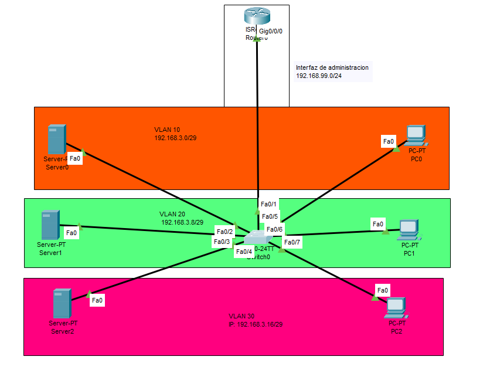
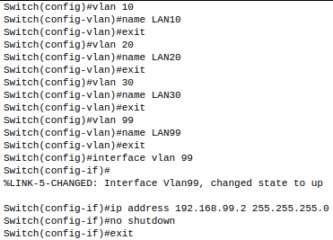
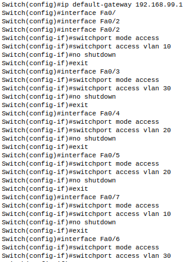
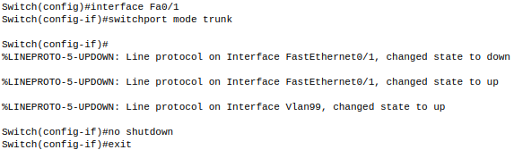
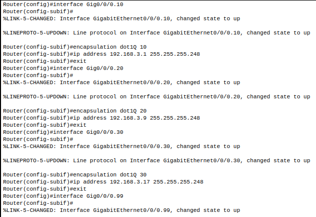
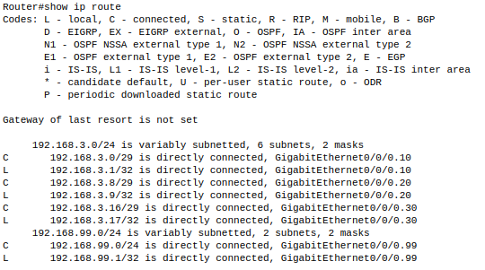
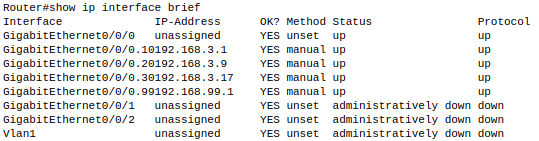
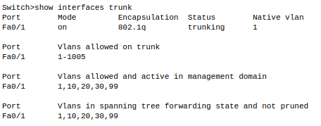

¿Cuál es el objetivo?
En este proyecto veremos como estará organizada nuestra red de la empresa. Haremos VLSM y crearemos VLAN para el aislamiento de equipos.
Infraestructura de red
Aquí veremos la ip de red usada en nuestra red tanto como las ip que se reparten usando VLSM y las VLAN divididas en diferentes colores.
Tenemos lo siguiente:
- IP de Red: 192.168.3.0/24
- Red 1: 192.168.3.0/29
- Red 2: 192.168.3.8⁄29
- Red 3: 192.168.3.16⁄29
- IP de Administración: 192.168.99.0/24

Primero tendremos que crear y nombrar las diferentes VLAN en nuestro caso haremos 3. También le definimos la ip a la interfaz de administración. Esto se hará desde la consola del switch Cisco de la siguiente forma:

A continuación asignaremos a cada interfaz del switch que apunta hacia los PC y servers mode access. Así aislaremos cada equipo a su VLAN correspondiente.
De nuevo se realiza desde la consola Cisco:

A la interfaz que apunta hacia el router se le asignara el modo trunk:

Para el buen funcionamiento de las VLAN tendremos que segmentar la interfaz del Router para que así resuelva adecuadamente las conexión entre los equipos.
Se realiza de la siguiente forma:

Para ver cómo ha quedado nuestra infraestructura de red usaremos algunos de los siguientes comandos viendo así que todo se ha configurado correctamente.
Aquí vemos todas las IP de la red:

Vemos como todas las subinterfaces se han creado correctamente:

La interfaz que apunta hacia el router tiene el modo trunk como vemos a continuación:

Y por último vemos las VLAN que están asociadas a cada interfaz: